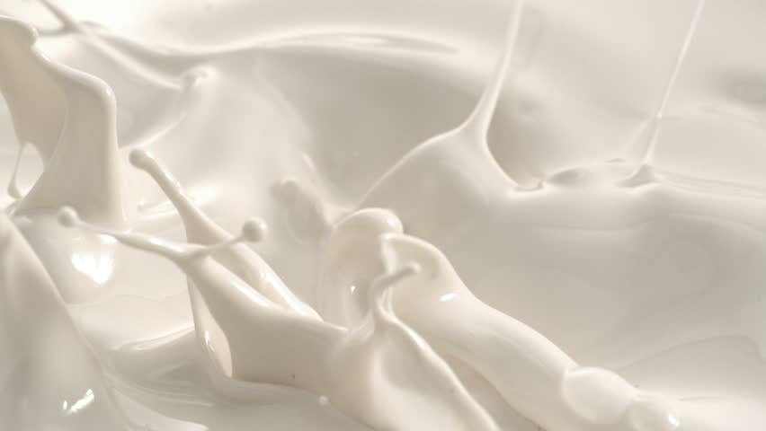
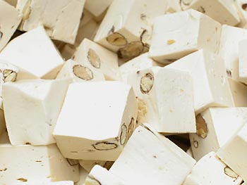

How is Toblerone made?
By Filipa Isaeva

Bar of Toblerone (Source: REUTERS/DARREN STAPLES)
There’s no way to not love Toblerone. Take a couple of minutes to immerse yourself in the taste experience that the chocolate provides and it will become your favorite. What you feel when you eat Toblerone is all thanks to our special ingredients – cocoa, milk, almond nougat and honey.

Cocoa beans (source: AbsorTech)
COCOA
The species of cocoa tree and makeup of the soil in the area of growth are responsible for the specific taste, aroma and colour of a chocolate. Toblerone is made from cocoa beans which are cultivated in different parts all around the world. The cocoa in Toblerone comes mainly from Mexico, Venezuela, Ecuador and Brazil.
Milk is an essential part from chocolate production (source: Julia Malacoff)
MILK
Different types of chocolate contain different amount of milk in them. Milk chocolate has at least 12% milk, either in the form of milk powder, liquid milk or condensed milk. For this reason it looks and tastes creamier than dark chocolate.
White chocolate is made from sugar, milk, cocoa butter and sometimes vanilla. Some people might say that it is technically not chocolate because it doesn’t contain cocoa solids. Depending on the brand, white chocolate can contain usually minimum 14% milk solids.
Dark chocolate often doesn’t have milk in it. It can taste either bittersweet, semisweet or bitter depending on the amount of pure cocoa that it contains. Bittersweet and semisweet chocolate have at least 35% cocoa. Meanwhile, bitter-tasted dark chocolate has more than 80% cocoa.
Almond honey nougat (Source: Joy Skipper)
ALMOND NOUGAT
Toblerone nougat is a mixture of sugar, honey, egg whites and Californian almonds. Nougat can be either stiff and chewy or it could be only an airy filling in the candy bar. When it comes to color, it has different varieties from white to beige to pink. In Toblerone the delicious chewy bits in the milk chocolate are actually a finer type of nougat.

Honey (Source: Getty Images)
HONEY
And last but not least on the list is the honey. When we make Toblerone, we use 3% Mexican honey. We have chosen this type because of the intense aroma. As a result, it gives the almond nougat an exquisite flavor which you can’t resist.